创建和配置
下面是创建和配置项目, 可以看看, 但是本文重点是怎么开web接口和连接数据库, 所以可以直接从gitee上下载我配好的
创建项目
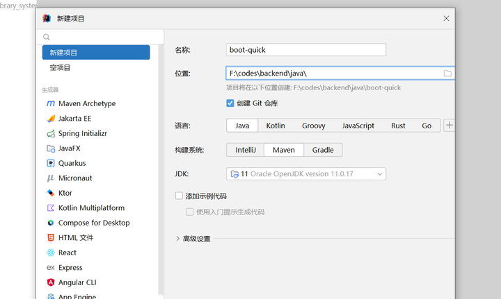
java配置
idea里可以下载java
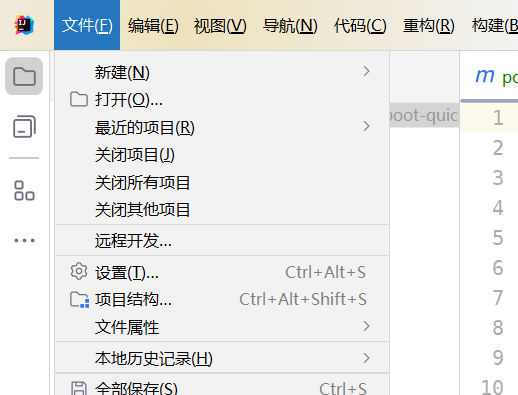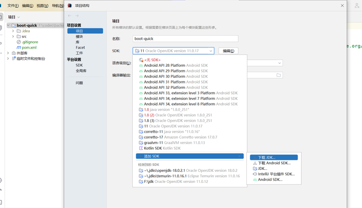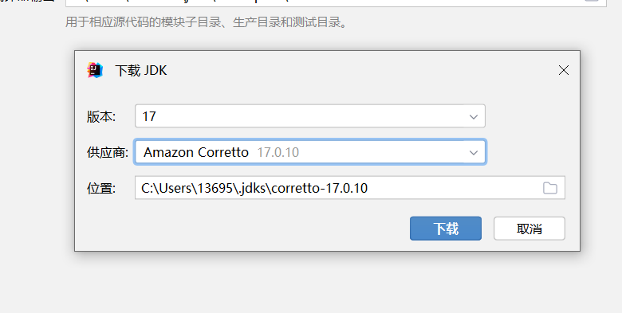
maven
maven用来帮你管理项目需要的包(库), 不过要下载快需要配镜像, 请查阅网络资料
添加依赖 -> 在pom.xml里加
我们需要springboot, 它帮我们配置好了很多框架(约定大于配置), 简化了我们配置的流程, 相当于项目的脚手架, 我们可以在此基础上快速开发
<?xml version="1.0" encoding="UTF-8"?>
<project xmlns="http://maven.apache.org/POM/4.0.0"
xmlns:xsi="http://www.w3.org/2001/XMLSchema-instance"
xsi:schemaLocation="http://maven.apache.org/POM/4.0.0 http://maven.apache.org/xsd/maven-4.0.0.xsd">
<modelVersion>4.0.0</modelVersion>
<groupId>org.example</groupId>
<artifactId>boot-quick</artifactId>
<version>1.0-SNAPSHOT</version>
<!--让工程继承springboot-->
<parent>
<groupId>org.springframework.boot</groupId>
<artifactId>spring-boot-starter-parent</artifactId>
<version>2.4.5</version>
<relativePath/> <!-- lookup parent from repository -->
</parent>
<properties>
<maven.compiler.source>11</maven.compiler.source>
<maven.compiler.target>11</maven.compiler.target>
<project.build.sourceEncoding>UTF-8</project.build.sourceEncoding>
</properties>
<dependencies>
<!--jwt是json web token的简称, 用来身份验证-->
<!-- https://mvnrepository.com/artifact/io.jsonwebtoken/jjwt -->
<dependency>
<groupId>io.jsonwebtoken</groupId>
<artifactId>jjwt</artifactId>
<version>0.9.1</version>
</dependency>
<!--这个是用于进行数据校验的-->
<!-- https://mvnrepository.com/artifact/org.springframework.boot/spring-boot-starter-validation -->
<!-- <dependency>-->
<!-- <groupId>org.springframework.boot</groupId>-->
<!-- <artifactId>spring-boot-starter-validation</artifactId>-->
<!-- </dependency>-->
<!--springboot依赖-->
<dependency>
<groupId>org.springframework.boot</groupId>
<artifactId>spring-boot-starter</artifactId>
</dependency>
<!--springboot测试-->
<!-- <dependency>-->
<!-- <groupId>org.springframework.boot</groupId>-->
<!-- <artifactId>spring-boot-starter-test</artifactId>-->
<!-- <scope>test</scope>-->
<!-- </dependency>-->
<!--springboot的web依赖-->
<dependency>
<groupId>org.springframework.boot</groupId>
<artifactId>spring-boot-starter-web</artifactId>
<scope>compile</scope>
</dependency>
<!--mybatis plus 连接数据库用的-->
<dependency>
<groupId>com.baomidou</groupId>
<artifactId>mybatis-plus-boot-starter</artifactId>
<version>3.4.2</version>
</dependency>
<!--简化开发用的, 用它给的注解可以少写很多代码-->
<dependency>
<groupId>org.projectlombok</groupId>
<artifactId>lombok</artifactId>
<version>1.18.20</version>
</dependency>
<!--处理json用的-->
<dependency>
<groupId>com.alibaba</groupId>
<artifactId>fastjson</artifactId>
<version>1.2.83</version>
</dependency>
<!--简化开发-->
<dependency>
<groupId>commons-lang</groupId>
<artifactId>commons-lang</artifactId>
<version>2.6</version>
</dependency>
<!--连接数据库要用的底层驱动-->
<dependency>
<groupId>mysql</groupId>
<artifactId>mysql-connector-java</artifactId>
<version>8.0.28</version>
<scope>runtime</scope>
</dependency>
<!--数据库连接池, 用来复用和数据库的连接-->
<dependency>
<groupId>com.alibaba</groupId>
<artifactId>druid-spring-boot-starter</artifactId>
<version>1.1.23</version>
</dependency>
<!--java11缺失的包-->
<dependency>
<groupId>javax</groupId>
<artifactId>javaee-api</artifactId>
<version>7.0</version>
</dependency>
<!--测试用-->
<dependency>
<groupId>junit</groupId>
<artifactId>junit</artifactId>
<scope>test</scope>
</dependency>
<!--模板引擎 代码生成-->
<!-- <dependency>-->
<!-- <groupId>org.apache.velocity</groupId>-->
<!-- <artifactId>velocity-engine-core</artifactId>-->
<!-- <version>2.2</version>-->
<!-- </dependency>-->
</dependencies>
<build>
<plugins>
<plugin>
<groupId>org.springframework.boot</groupId>
<artifactId>spring-boot-maven-plugin</artifactId>
<version>2.4.5</version>
</plugin>
</plugins>
</build>
</project>
一些基本工具类和配置类
与前端交互时传递的数据结构
这里的@Data是lombok提供的, 会为我们生成get和set方法来获取和修改类里的属性值
package common;
import lombok.Data;
import java.util.HashMap;
import java.util.Map;
// 前后端交互时传递的数据结构
@Data
public class R<T> {
private Integer code; //编码：1成功，0和其它数字为失败
private String msg; //错误信息
private T data; //数据
private Map map = new HashMap(); //动态数据
public static <T> R<T> success(T object) {
R<T> r = new R<T>();
r.data = object;
r.code = 1;
return r;
}
public static <T> R<T> error(String msg) {
R r = new R();
r.msg = msg;
r.code = 0;
return r;
}
public R<T> add(String key, Object value) {
this.map.put(key, value);
return this;
}
}
mybatis plus 自动填充字段
我们大部分的数据库表都有createTime和updateTime字段, 表示创建和修改的时间, 为了方便, 我们配置自动填充
package common;
import com.baomidou.mybatisplus.core.handlers.MetaObjectHandler;
import lombok.extern.slf4j.Slf4j;
import org.apache.ibatis.reflection.MetaObject;
import org.springframework.stereotype.Component;
import java.time.LocalDateTime;
@Slf4j
@Component
public class MyMetaObjectHandler implements MetaObjectHandler {
// 新增属性时填充
@Override
public void insertFill(MetaObject metaObject) {
log.info("公共字段自动填充[insert]...");
metaObject.setValue("createTime", LocalDateTime.now());
metaObject.setValue("updateTime", LocalDateTime.now());
}
// 修改属性时填充
@Override
public void updateFill(MetaObject metaObject) {
log.info("公共字段自动填充[update]...");
metaObject.setValue("updateTime", LocalDateTime.now());
}
}
json数据的处理
package common;
import com.fasterxml.jackson.databind.DeserializationFeature;
import com.fasterxml.jackson.databind.ObjectMapper;
import com.fasterxml.jackson.databind.module.SimpleModule;
import com.fasterxml.jackson.databind.ser.std.ToStringSerializer;
import com.fasterxml.jackson.datatype.jsr310.deser.LocalDateDeserializer;
import com.fasterxml.jackson.datatype.jsr310.deser.LocalDateTimeDeserializer;
import com.fasterxml.jackson.datatype.jsr310.deser.LocalTimeDeserializer;
import com.fasterxml.jackson.datatype.jsr310.ser.LocalDateSerializer;
import com.fasterxml.jackson.datatype.jsr310.ser.LocalDateTimeSerializer;
import com.fasterxml.jackson.datatype.jsr310.ser.LocalTimeSerializer;
import java.math.BigInteger;
import java.time.LocalDate;
import java.time.LocalDateTime;
import java.time.LocalTime;
import java.time.format.DateTimeFormatter;
import static com.fasterxml.jackson.databind.DeserializationFeature.FAIL_ON_UNKNOWN_PROPERTIES;
/**
* 对象映射器:基于jackson将Java对象转为json，或者将json转为Java对象
* 将JSON解析为Java对象的过程称为 [从JSON反序列化Java对象]
* 从Java对象生成JSON的过程称为 [序列化Java对象到JSON]
*/
public class JacksonObjectMapper extends ObjectMapper {
public static final String DEFAULT_DATE_FORMAT = "yyyy-MM-dd";
public static final String DEFAULT_DATE_TIME_FORMAT = "yyyy-MM-dd HH:mm:ss";
public static final String DEFAULT_TIME_FORMAT = "HH:mm:ss";
public JacksonObjectMapper() {
super();
//收到未知属性时不报异常
this.configure(FAIL_ON_UNKNOWN_PROPERTIES, false);
//反序列化时，属性不存在的兼容处理
this.getDeserializationConfig().withoutFeatures(DeserializationFeature.FAIL_ON_UNKNOWN_PROPERTIES);
SimpleModule simpleModule = new SimpleModule()
.addDeserializer(LocalDateTime.class, new LocalDateTimeDeserializer(DateTimeFormatter.ofPattern(DEFAULT_DATE_TIME_FORMAT)))
.addDeserializer(LocalDate.class, new LocalDateDeserializer(DateTimeFormatter.ofPattern(DEFAULT_DATE_FORMAT)))
.addDeserializer(LocalTime.class, new LocalTimeDeserializer(DateTimeFormatter.ofPattern(DEFAULT_TIME_FORMAT)))
.addSerializer(BigInteger.class, ToStringSerializer.instance)
.addSerializer(Long.class, ToStringSerializer.instance)
.addSerializer(LocalDateTime.class, new LocalDateTimeSerializer(DateTimeFormatter.ofPattern(DEFAULT_DATE_TIME_FORMAT)))
.addSerializer(LocalDate.class, new LocalDateSerializer(DateTimeFormatter.ofPattern(DEFAULT_DATE_FORMAT)))
.addSerializer(LocalTime.class, new LocalTimeSerializer(DateTimeFormatter.ofPattern(DEFAULT_TIME_FORMAT)));
//注册功能模块 例如，可以添加自定义序列化器和反序列化器
this.registerModule(simpleModule);
}
}
mybatis分页配置
package config;
import com.baomidou.mybatisplus.annotation.DbType;
import com.baomidou.mybatisplus.extension.plugins.MybatisPlusInterceptor;
import com.baomidou.mybatisplus.extension.plugins.inner.PaginationInnerInterceptor;
import org.springframework.context.annotation.Bean;
import org.springframework.context.annotation.Configuration;
import org.springframework.transaction.annotation.EnableTransactionManagement;
import java.util.Collections;
@Configuration
@EnableTransactionManagement
public class MyBatisPlusConfig {
/**
* 分页插件(old)
* @authorzhengkai.blog.csdn.net
*/
// @Bean
// public PaginationInterceptor paginationInterceptor() {
// PaginationInterceptor paginationInterceptor = new PaginationInterceptor();
// // 设置请求的页面大于最大页后操作， true调回到首页，false 继续请求 默认false
// // paginationInterceptor.setOverflow(false);
// // 设置最大单页限制数量，默认 500 条，-1 不受限制
// paginationInterceptor.setLimit(1000);
// // 开启 count 的 join 优化,只针对部分 left join
// paginationInterceptor.setCountSqlParser(new JsqlParserCountOptimize(true));
// return paginationInterceptor;
// }
/**
* 分页插件 3.5.X
* @author zhengkai.blog.csdn.net
*/
@Bean
public PaginationInnerInterceptor paginationInnerInterceptor() {
PaginationInnerInterceptor paginationInterceptor = new PaginationInnerInterceptor();
// 设置最大单页限制数量，默认 500 条，-1 不受限制
paginationInterceptor.setMaxLimit(-1L);
paginationInterceptor.setDbType(DbType.MYSQL);
// 开启 count 的 join 优化,只针对部分 left join
paginationInterceptor.setOptimizeJoin(true);
return paginationInterceptor;
}
@Bean
public MybatisPlusInterceptor mybatisPlusInterceptor(){
MybatisPlusInterceptor mybatisPlusInterceptor = new MybatisPlusInterceptor();
mybatisPlusInterceptor.setInterceptors(Collections.singletonList(paginationInnerInterceptor()));
return mybatisPlusInterceptor;
}
}
mvc框架配置
package config;
import common.JacksonObjectMapper;
import lombok.extern.slf4j.Slf4j;
import org.springframework.context.annotation.Configuration;
import org.springframework.http.converter.HttpMessageConverter;
import org.springframework.http.converter.json.MappingJackson2HttpMessageConverter;
import org.springframework.web.servlet.config.annotation.ResourceHandlerRegistry;
import org.springframework.web.servlet.config.annotation.WebMvcConfigurationSupport;
import java.util.List;
@Slf4j
@Configuration
public class WebMvcConfig extends WebMvcConfigurationSupport {
/**
* 扩展mvc框架的消息转换器
*
* @param converters the list of configured converters to extend
*/
@Override
protected void extendMessageConverters(List<HttpMessageConverter<?>> converters) {
log.info("扩展消息转换器...");
//创建消息转换器对象
MappingJackson2HttpMessageConverter messageConverter = new MappingJackson2HttpMessageConverter();
//设置对象转换器，底层使用Jackson将Java对象转为json
messageConverter.setObjectMapper(new JacksonObjectMapper());
//将上面的消息转换器对象追加到mvc框架的转换器集合中
converters.add(0,messageConverter);
}
}
跨域
package org.malred.hospital.filter;
import org.springframework.context.annotation.Configuration;
import org.springframework.stereotype.Component;
import javax.servlet.*;
import javax.servlet.annotation.WebFilter;
import javax.servlet.http.HttpServletRequest;
import javax.servlet.http.HttpServletResponse;
import java.io.IOException;
// 跨域过滤器
@Component
@Configuration
//@WebFilter(filterName = "corsCheckFilter", urlPatterns = "/*")
public class CORSFilter implements Filter {
@Override
public void doFilter(ServletRequest request, ServletResponse response, FilterChain chain) throws IOException, ServletException, IOException, ServletException {
//*号表示对所有请求都允许跨域访问
HttpServletResponse res = (HttpServletResponse) response;
res.addHeader("Access-Control-Allow-Credentials", "true");
res.addHeader("Access-Control-Allow-Origin", "*");
// res.addHeader("Access-Control-Allow-Origin", "http://127.0.0.1:5173");
res.addHeader("Access-Control-Allow-Methods", "GET, POST, DELETE, PUT");
res.addHeader("Access-Control-Allow-Headers",
"Access-Control-Allow-Methods, Access-Control-Allow-Origin, Authorization, Content-Type, X-CAF-Authorization-Token, sessionToken, X-TOKEN");
if (((HttpServletRequest) request).getMethod().equals("OPTIONS")) {
response.getWriter().println("Success");
return;
}
chain.doFilter(request, response);
}
}
jwt工具类
package org.malred.hospital.utils;
import io.jsonwebtoken.Claims;
import io.jsonwebtoken.JwtBuilder;
import io.jsonwebtoken.Jwts;
import io.jsonwebtoken.SignatureAlgorithm;
import lombok.Data;
import lombok.extern.slf4j.Slf4j;
import org.springframework.beans.factory.annotation.Value;
import org.springframework.boot.context.properties.ConfigurationProperties;
import org.springframework.stereotype.Component;
import java.util.Calendar;
import java.util.Date;
/**
* jwt工具类
*/
@Slf4j
@Data
@Component
//@ConfigurationProperties("jwt.data")
public class JWTUtils {
//密钥
private String SECRET = "123456";
private String header = "Authorization";
//创建token
//传入userid
public String createToken(Long userId, String role) {
Calendar calendar = Calendar.getInstance();
calendar.add(Calendar.SECOND, 24 * 60 * 60 * 7);
JwtBuilder builder = Jwts.builder()
.setHeaderParam("typ", "JWT")
.setSubject(userId + ":" + role)
.setIssuedAt(new Date())
.setExpiration(calendar.getTime())
.signWith(SignatureAlgorithm.HS256, SECRET);
return builder.compact();
}
//校验jwt
public Claims parseToken(String token) {
try {
return Jwts.parser()
.setSigningKey(SECRET)
.parseClaimsJws(token)
.getBody();
} catch (Exception e) {
log.error("jwt match error:{}", e);
return null;
}
}
//判断token是否过期
public boolean judgeTokenExpiration(Date expiration) {
// 在expiration之后的都是过期的
return expiration.before(new Date());
}
}
上面这些是从之前写的瑞吉外卖里拿的
yml配置
可以用yml文件来为springboot项目配置一些需要用到的信息
# resources/application.yml
server:
# 服务启动后允许在哪个端口 -> localhost:port
port: 8888
spring:
application:
# 项目名称
name: school_hospital
datasource:
# 数据库连接池配置
druid:
driver-class-name: com.mysql.cj.jdbc.Driver
url: jdbc:mysql://localhost:3307/school_hospital?serverTimezone=Asia/Shanghai&useUnicode=true&characterEncoding=utf-8&zeroDateTimeBehavior=convertToNull&useSSL=false&allowPublicKeyRetrieval=true
username: 你本地数据库的账号
password: 你本地数据库的密码
mybatis-plus:
configuration:
# addr_book -> addrBook
#在映射实体或者属性时，将数据库中表名和字段名中的下划线去掉，按照驼峰命名法映射
map-underscore-to-camel-case: true
log-impl: org.apache.ibatis.logging.stdout.StdOutImpl
global-config:
db-config:
id-type: ASSIGN_ID
# 生成jwt时需要
jwt:
data:
header: Authorization
SECRET: fasdkfjasf
项目结构
mvc三层架构:
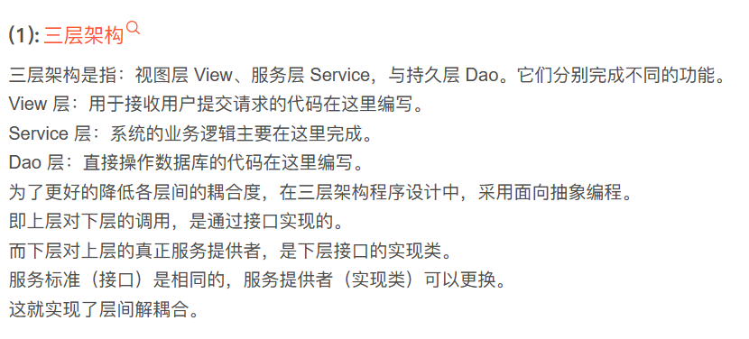
- service目录: 服务层
- mapper目录: 持久层
- controller目录: 试图层
- entity目录: 存放和数据库表对应的实体类
数据库
idea内置查看来查看数据库
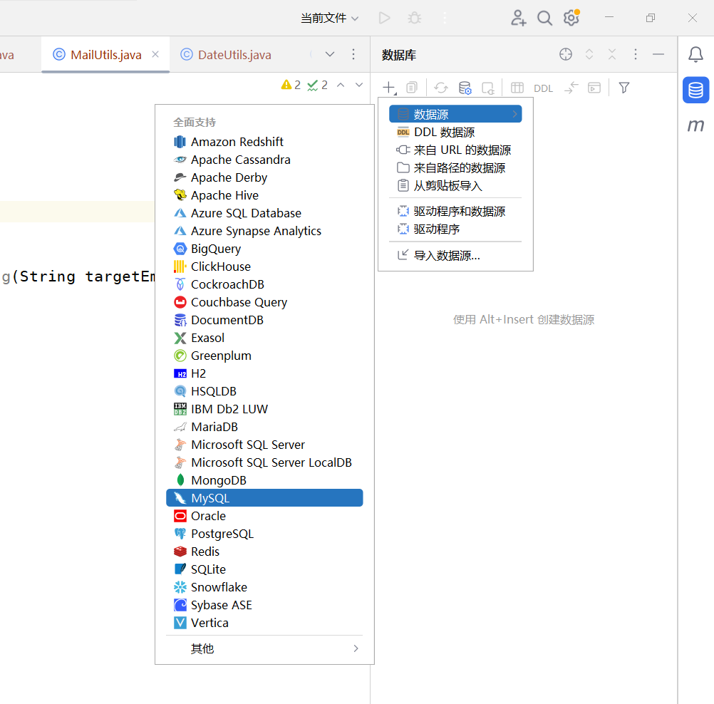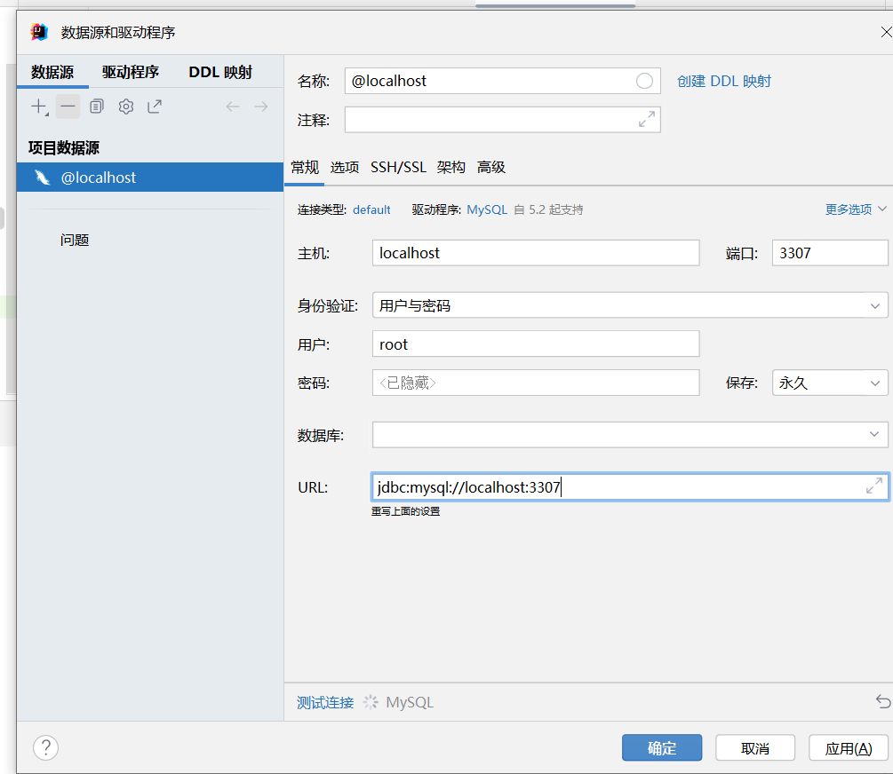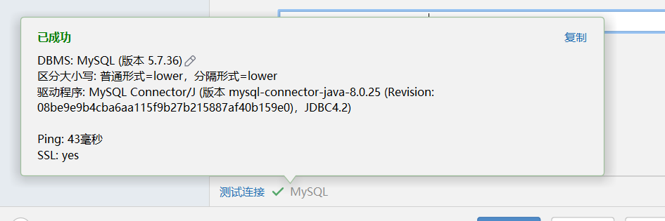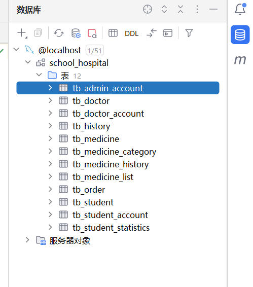
数据库的sql文件我放到resouces/data下, 只需要导入就行
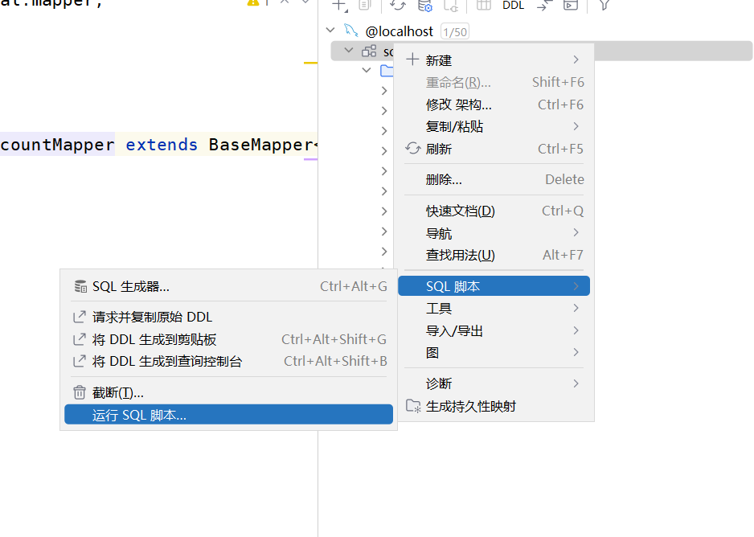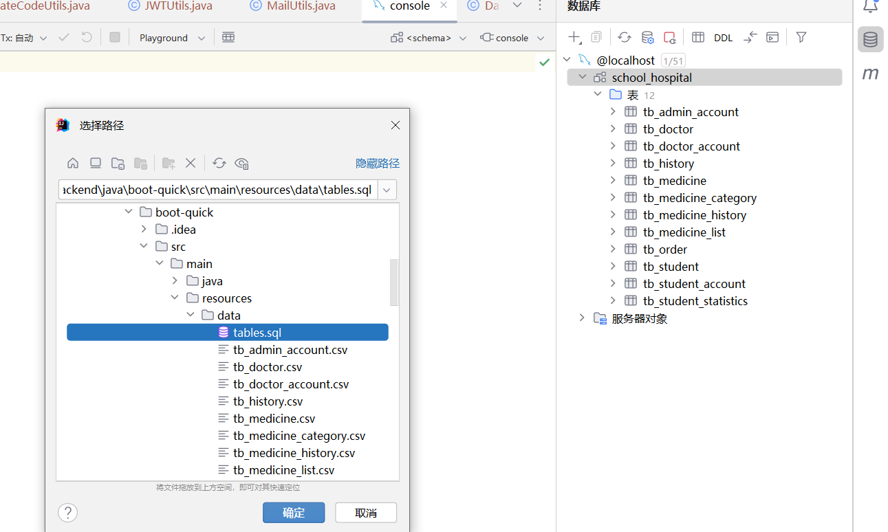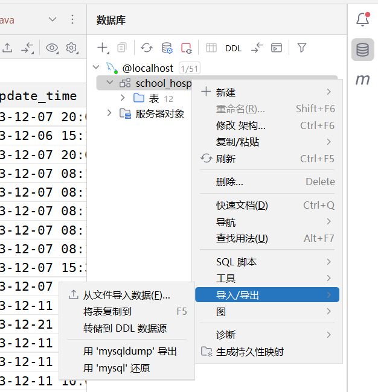
实体类
我们根据数据库创建实体类, 但是时代变了, 用idea自带的脚本可以快速创建, 只需要修改一下就能使用
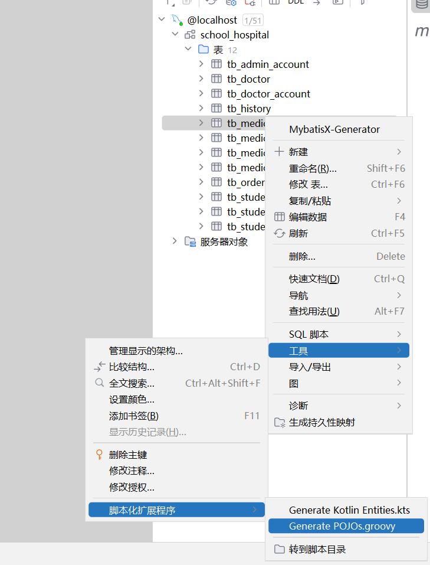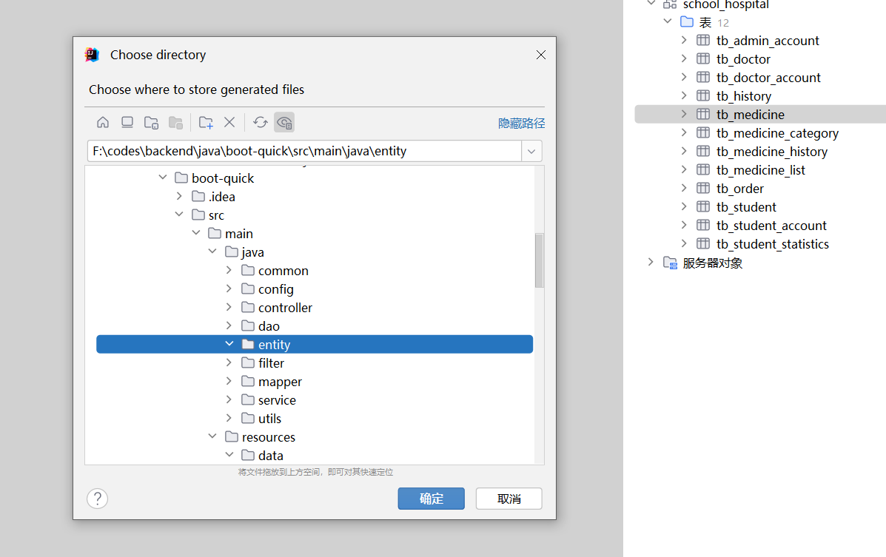
生成后的脚本
package com.sample;
public class TbMedicine {
private long id;
private String name;
private long number;
private java.sql.Timestamp createTime;
private java.sql.Timestamp updateTime;
private long categoryId;
private double price;
public long getId() {
return id;
}
public void setId(long id) {
this.id = id;
}
public String getName() {
return name;
}
public void setName(String name) {
this.name = name;
}
public long getNumber() {
return number;
}
public void setNumber(long number) {
this.number = number;
}
public java.sql.Timestamp getCreateTime() {
return createTime;
}
public void setCreateTime(java.sql.Timestamp createTime) {
this.createTime = createTime;
}
public java.sql.Timestamp getUpdateTime() {
return updateTime;
}
public void setUpdateTime(java.sql.Timestamp updateTime) {
this.updateTime = updateTime;
}
public long getCategoryId() {
return categoryId;
}
public void setCategoryId(long categoryId) {
this.categoryId = categoryId;
}
public double getPrice() {
return price;
}
public void setPrice(double price) {
this.price = price;
}
}
- 我们把get set方法删掉, 换成@Data注解
- 把package后面的全类名换成正确的, 比如该类在java/malred/entity下, 那就是malred.entity
- 把小写开头的类型换成大写开头的, 比如long -> Long
- 时间类型改为java.util.Date
package bootQuick.entity;
import lombok.Data;
import java.util.Date;
@Data
public class TbMedicine {
private Long id;
private String name;
private Long number;
private Date createTime;
private Date updateTime;
private Long categoryId;
private Double price;
}
mapper类
dao类声明了和数据库交互的接口, 在mybatis中会作为id唯一标识mapper/xxx.xml文件里的一条sql, mybatisplus简化了这些,
使用mapper类封装了基本操作
package bootQuick.mapper;
import com.baomidou.mybatisplus.core.mapper.BaseMapper;
import org.apache.ibatis.annotations.Mapper;
import bootQuick.entity.TbMedicine;
@Mapper
public interface MedicineMapper extends BaseMapper<TbMedicine> {
}
service类
service类可以进行一些业务处理, controller层可以通过它来操作数据库和实现业务处理
package bootQuick.service;
import com.baomidou.mybatisplus.extension.service.IService;
import bootQuick.entity.TbMedicine;
public interface MedicineService extends IService<TbMedicine> {
}
package bootQuick.service.impl;
import com.baomidou.mybatisplus.extension.service.impl.ServiceImpl;
import bootQuick.entity.TbMedicine;
import bootQuick.mapper.MedicineMapper;
import org.springframework.stereotype.Service;
import bootQuick.service.MedicineService;
@Service
public class MedicineServiceImpl
extends ServiceImpl<MedicineMapper, TbMedicine>
implements MedicineService {
}
controller
controller接收网络请求, 将网络请求携带的参数等信息进行验证和处理, 然后交给service层做进一步操作
package bootQuick.controller;
import common.R;
import bootQuick.entity.TbMedicine;
import lombok.extern.slf4j.Slf4j;
import org.springframework.beans.factory.annotation.Autowired;
import org.springframework.web.bind.annotation.*;
import bootQuick.service.MedicineService;
import java.util.List;
@Slf4j
@RestController
@RequestMapping("/medicine") // localhost:port/medicine
public class MedicineController {
@Autowired
private MedicineService service;
@GetMapping("/findAll") // localhost:port/medicine/findAll
public R<List<TbMedicine>> findAll() {
try {
return R.success(service.list());
} catch (Exception e) {
return R.error(e.getMessage());
}
}
@GetMapping("/find/{id}") // localhost:port/medicine/find/1
public R<TbMedicine> findById(@PathVariable Long id) {
return R.success(service.getById(id));
}
@GetMapping("/count") // localhost:port/medicine/count
public R<Integer> count() {
return R.success(service.count());
}
@PostMapping("/save") // localhost:port/medicine/save
public R<TbMedicine> insert(@RequestBody TbMedicine dto) {
dto.setNumber(0L);
if (service.save(dto)) {
log.info("medicine: {}", dto.toString());
return R.success(dto);
} else {
return R.error("添加 [Medicine] 失败");
}
}
@PutMapping("/save") // localhost:port/medicine/save
public R<TbMedicine> update(@RequestBody TbMedicine dto) {
if (service.saveOrUpdate(dto)) {
return R.success(dto);
} else {
return R.error("修改 [Medicine] 失败");
}
}
@DeleteMapping("/delete/{id}") // localhost:port/medicine/delete/1
public R<TbMedicine> delete(@PathVariable Long id) {
if (service.removeById(id)) {
return R.success(null);
} else {
return R.error("删除 [Medicine] 失败");
}
}
}
这里面的XXXMapping表明了一个网络接口, 网络请求到这个接口, 就会定位到这个方法进行处理
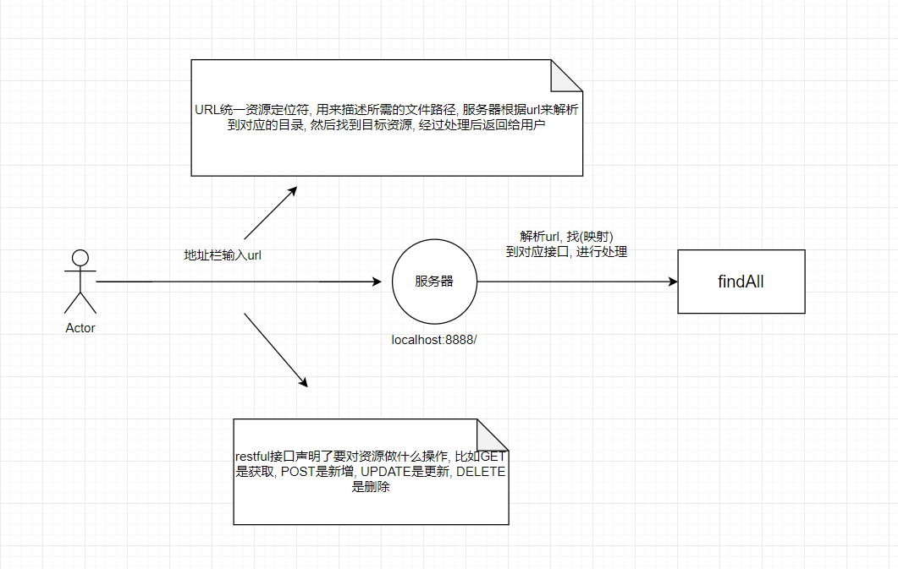
套路
entity类用来表示一张表((对象关系映射)) -> mapper类用来操作数据库 -> service类用来处理复杂逻辑 ->
controller类接收请求调用service完成业务
测试接口
package bootQuick;
import org.springframework.boot.SpringApplication;
public class application {
public static void main(String[] args) {
SpringApplication.run(application.class, args);
}
}
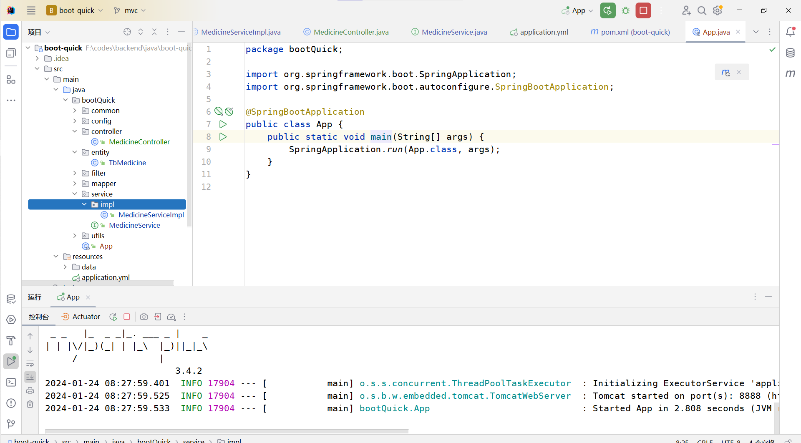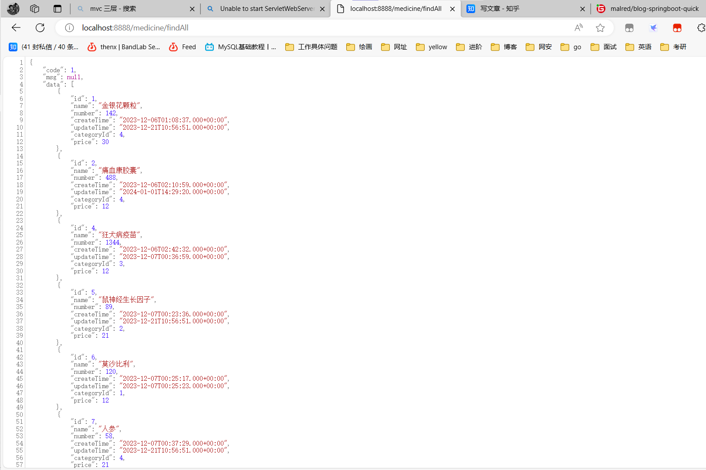
代码生成
知道这些代码的基本结构后, 发现很多代码是差不多一模一样的, 这些重复代码我们就用代码生成器来生成, 然后再修改和定制化开发
在pom.xml中添加代码生成器的依赖
<!--模板引擎 代码生成-->
<dependency>
<groupId>org.apache.velocity</groupId>
<artifactId>velocity-engine-core</artifactId>
<version>2.2</version>
</dependency>
工具类
package bootQuick.utils;
import bootQuick.entity.TbOrder;
import java.io.IOException;
public class gen {
public static void main(String[] args) throws IOException {
String[] entityName = new String[]{
"order",
};
Object[] classes = new Object[]{
new TbOrder(),
};
for (int i = 0; i < entityName.length; i++) {
GenUtils.genTsType(entityName[i], classes[i].getClass());
genControl();
}
}
public static void genControl() throws IOException {
String[] entityName = new String[]{
"Order",
};
String[] entityFullName = new String[]{
"org.malred.hospital.entity.TbOrder",
};
String[] route = new String[]{
"order",
};
for (int i = 0; i < entityFullName.length; i++) {
GenUtils.genController(
entityName[i], entityFullName[i], route[i]
);
}
}
}
package bootQuick.utils;
import org.apache.velocity.Template;
import org.apache.velocity.VelocityContext;
import org.apache.velocity.app.Velocity;
import java.io.FileWriter;
import java.io.IOException;
import java.lang.reflect.Field;
import java.util.HashMap;
import java.util.Map;
import java.util.Properties;
public class GenUtils {
public static void genMethodRepository(
String entityName, String entityFullName, Map<String, String> paramMap
) throws IOException {
// 1,设置velocity的资源加载器
Properties prop = new Properties();
prop.put("file.resource.loader.class",
"org.apache.velocity.runtime.resource.loader.ClasspathResourceLoader");
// 2,初始化velocity引擎
Velocity.init(prop);
// 3,创建velocity容器
VelocityContext context = new VelocityContext();
// 设置数据
context.put("entityName", entityName);
context.put("entityFullName", entityFullName);
// 4,加载velocity模板文件
Template template = Velocity.getTemplate("GenRepository.vm", "utf-8");
// 5,合并数据到模板
FileWriter fw = new FileWriter("src/main/resources/" + entityName + "GenRepository.java");
// 合并+写入
template.merge(context, fw);
// 6,释放资源
fw.close();
}
public static void genController(
String entityName, String entityFullName, String route
) throws IOException {
// 1,设置velocity的资源加载器
Properties prop = new Properties();
prop.put("file.resource.loader.class",
"org.apache.velocity.runtime.resource.loader.ClasspathResourceLoader");
// 2,初始化velocity引擎
Velocity.init(prop);
// 3,创建velocity容器
VelocityContext context = new VelocityContext();
// 设置数据
context.put("entityName", entityName);
context.put("entityFullName", entityFullName);
context.put("route", route);
// 4,加载velocity模板文件
Template template = Velocity.getTemplate("vms/genController.vm", "utf-8");
// 5,合并数据到模板
FileWriter fw =
new FileWriter("src/main/resources/gen/controller/" + entityName + "Controller.java");
// 合并+写入
template.merge(context, fw);
// 6,释放资源
fw.close();
}
public static void genTsType(
String entityName, Class<?> aclass
) throws IOException {
// 1,设置velocity的资源加载器
Properties prop = new Properties();
prop.put("file.resource.loader.class",
"org.apache.velocity.runtime.resource.loader.ClasspathResourceLoader");
// 2,初始化velocity引擎
Velocity.init(prop);
// 3,创建velocity容器
VelocityContext context = new VelocityContext();
// 设置数据 k-类型 v-变量名
Map<String, String> map = new HashMap();
for (Field declaredField : aclass.getDeclaredFields()) {
map.put(
switchType(declaredField.getType().getSimpleName()),
declaredField.getName()
);
}
context.put("map", map);
context.put("entityName", entityName);
// 4,加载velocity模板文件
Template template = Velocity.getTemplate("vms/genTsType.vm", "utf-8");
// 5,合并数据到模板
FileWriter fw =
new FileWriter("src/main/resources/gen/tstype/" + entityName + ".ts");
// 合并+写入
template.merge(context, fw);
// 6,释放资源
fw.close();
}
public static String switchType(String typeName) {
switch (typeName) {
case "long":
return "number";
case "Long":
return "number";
case "String":
return "string";
case "LocalDateTime":
return "string";
default:
return "any";
}
}
}
代码生成通过解析模板引擎并填入数据实现, 所以我们需要模板文件, 把之前写的代码复制过来修改一下, 文件在resources/vms
package org.malred.hospital.controller;
import org.malred.hospital.common.R;
## 传入引入的实体类的全类名
import ${entityFullName};
## 传入引入的实体类的全类名
import ${entityFullName};
## 传入引入的实体类的全类名
import ${entityFullName};
import org.malred.hospital.service.${entityName}Service;
import org.malred.hospital.service.${entityName}Service;
import org.springframework.beans.factory.annotation.Autowired;
import org.springframework.web.bind.annotation.RequestBody;
import org.springframework.web.bind.annotation.RequestMapping;
import org.springframework.web.bind.annotation.RestController;
import java.util.List;
@Slf4j
@CrossOrigin(origins = "*",maxAge = 3600)
@RestController
@RequestMapping("/${route}")
public class ${entityName}Controller extends BaseController {
@Autowired
private ${entityName}Service service;
@Override
public R> findAll() {
return R.success(service.list());
}
@Override
public R findById(Long id) {
return R.success(service.getById(id));
}
@Override
public R insert(@RequestBody Tb${entityName} dto) {
if (service.save(dto)) {
return R.success(dto);
} else {
return R.error("添加 [${entityName}] 失败");
}
}
@Override
public R update(@RequestBody Tb${entityName} dto) {
if (service.save(dto)) {
return R.success(dto);
} else {
return R.error("修改 [${entityName}] 失败");
}
}
@Override
public R delete(Long id) {
if (service.removeById(id)) {
return R.success(null);
} else {
return R.error("删除 [${entityName}] 失败");
}
}
}
interface ${entityName} {
#foreach($entry in $map.entrySet())
## name: string
$entry.value: $entry.key
#end
}
export default ${entityName};
接下来只需要创建实体类, 然后创建生成文件的目录, 再运行gen类的main方法
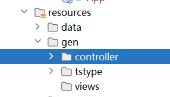
package bootQuick.entity;
import lombok.Data;
import java.util.Date;
@Data
public class TbOrder {
private Long id;
private Long doctorId;
private Long studentId;
private Date createTime;
private Date updateTime;
private Long status;
private Long historyId;
}
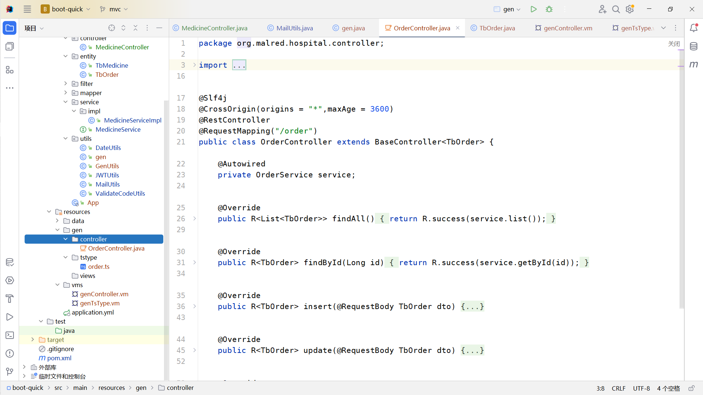
接下来将文件拖动到对应目录就可以用了
todo …